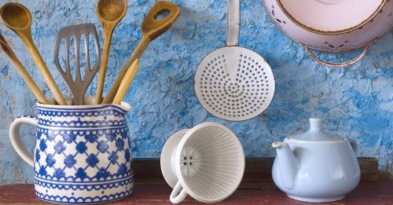

Những thứ độc hại cần tống khứ khỏi nhà bếp
1. Nói không với nhựa
Các sản phẩm làm từ nhựa nói chung là độc hại từ quá trình sản xuất, sử dụng và xử lý chất thải về sau. Một số loại nhựa được sử dụng trong nhà bếp
và đồ gia dụng có thể sản sinh hóa chất độc, dễ dàng thôi sang thực phẩm, đồ uống và tồn tại lởn vởn lâu dài trong không khí.
Do đó mọi người được khuyên nên lựa chọn những sản phẩm gia dụng an toàn cho sức khỏe làm từ thủy tinh, gốm hoặc thép không gỉ, có thể dễ dàng mua ở
cửa hàng tạp hóa. Còn nếu bạn vẫn thích dùng đồ nhựa, hãy chọn loại có thể tái chế để ít nhất chúng không gây ô nhiễm môi trường về sau.

2. Không dùng chảo chống dính
Chảo chống dính được phủ một lớp hóa chất rất độc và tồn tại lâu trong môi trường. Perfluorooctanoic axit, hóa chất được sử dụng để tạo ra teflon, là
chất chống dính có thể gây ung thư nếu xâm nhập vào cơ thể. Nó có thể gây hại cho thận, gan, cũng như các rối loại về sinh sản.
Mặc dù các nhà sản xuất quảng cáo rằng loại chảo này không có hóa chất độc hại, nhưng thực tế khi nấu ở nhiệt độ cao, perfluorooctanoic axit có thể bốc
hơi từ bề mặt chống dính. Mặt khác bề mặt chảo chống dính bị trầy xước cũng có thể làm cho hóa chất thôi ra và bám vào thức ăn.
Có những lựa chọn thay thế an toàn hơn cho đồ dùng nấu nướng của bạn thay vì dùng đồ chống dính. Đó có thể là dụng cụ thủy tinh, gốm sứ, thép không gỉ, gang...
3. Nên chọn thực phẩm hữu cơ
Dùng thực phẩm hữu cơ tươi, sạch là cách an toàn nhất để đảm bảo rằng bạn đang hấp thu được các loại hoa quả, thịt và rau lành mạnh, tốt cho sức khỏe.
Các loại thực phẩm có gắn nhãn “100% hữu cơ” thì không chứa các sinh vật chuyển gene (là sản phẩm đã được biến đổi gene trong phòng thí nghiệm). Mặc dù
thực tế thực phẩm hữu cơ đắt hơn bình thường nên ít gia đình có điều kiện mua.
4. Chú ý khử thuốc trừ sâu
Thuốc trừ sâu là chất độc, trong nhiều trường hợp, nó còn độc hại hơn nhiều so với sức phá hoại của sâu bọ. Thuốc bảo vệ thực vật đã được chứng minh gây
ra nhiều vấn đề sức khỏe bao gồm bệnh hen suyễn, tăng động, các vấn đề rối loạn hành vi, ung thư, khuyết tật, rối loại sinh sản và gây tổn thương đến sự phát
triển của não. Bạn có thể ngăn ngừa sâu bệnh trong nhà bếp của mình bằng việc vệ sinh hằng ngày và những thói quen bảo quản thực phẩm một cách tự nhiên thay vì dùng hóa chất.
5. Sử dụng thuốc tẩy rửa có nguồn gốc tự nhiên
Để giữ cho nhà bếp sạch sẽ mà không độc hại, hãy sử dụng chất tẩy rửa có lợi cho môi trường lại không để lại mùi hóa chất khó chịu trên chén bát, sàn,
bếp hoặc các thiết bị khác. Hãy làm vệ sinh nhà bếp để ngăn ngừa nhiễm khuẩn bằng cách sử dụng hydrogen peroxide hoặc dầu cây trà.
Để tìm những sản phẩm làm sạch có lợi cho môi trường bạn có thể nhìn vào nhãn ghi trên bao bì. Tránh mua các sản phẩm có chứa nonylphenol ethoxylate,
triclosan, ammonia, thuốc tẩy clo, DEA, TEA, hydrochloric acid, sodium hydroxide, và axit sulfuric. Ngoài ra bạn cũng có thể tự chế tạo chất tẩy rửa từ
những thành phần tự nhiên dễ tìm trong dân gian.